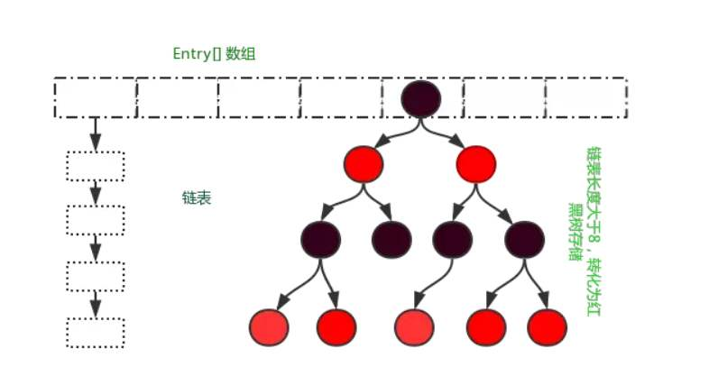
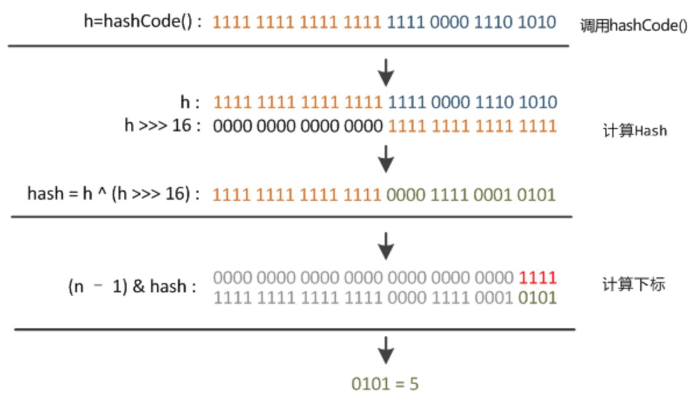
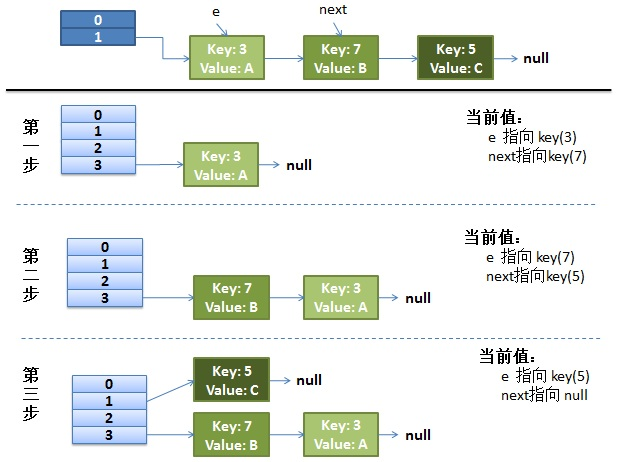
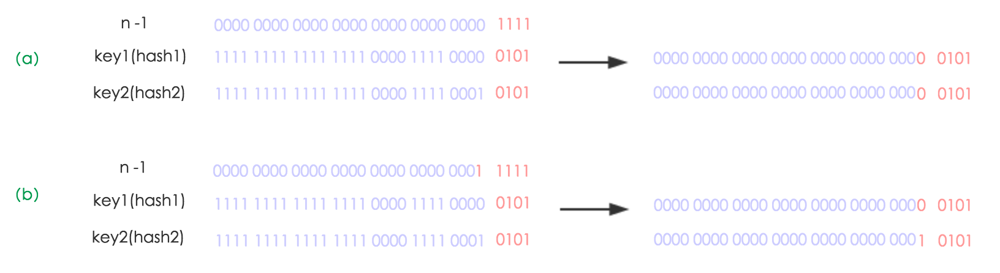
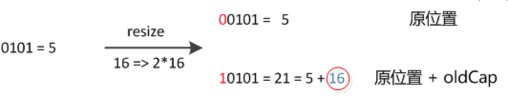
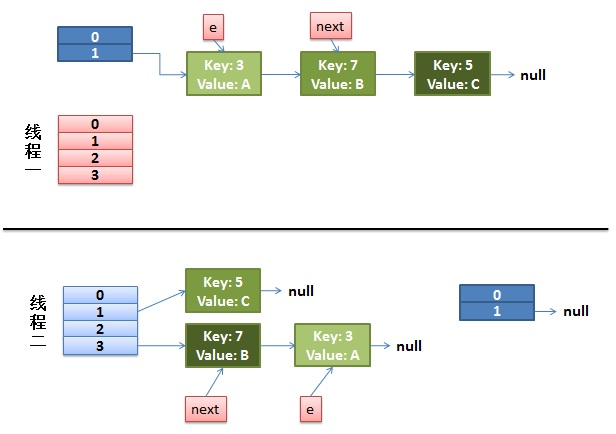
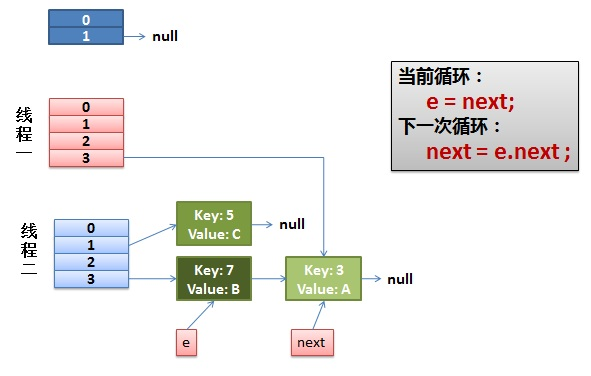
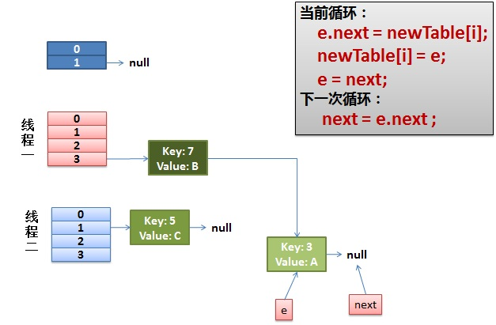
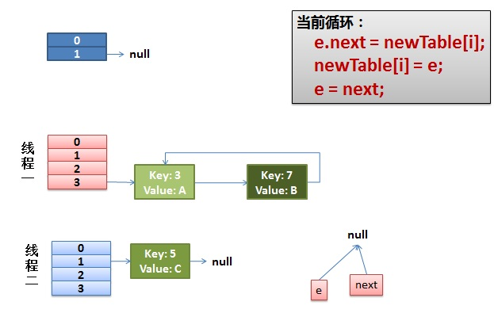

注：感谢 美团点评技术团队 的分享~~，博客部分内容摘抄自其中。侵删！
今天我们来探究一下 HashMap 的内部实现机制。
明确 JDK 1.8 中的 HashMap 使用数组 + 链表 + 红黑树的结构进行实现。
HashMap 的底层思想主要是哈希表，我们来看看 Java 的设计者们是怎么使用数组 + 链表 + 红黑树设计出 HashMap 的。
HashMap的基本属性
既然是用哈希表进行实现，那么基本的数据结构就是数组了，HashMap 部分源码如下：
1 | public class HashMap<K,V> extends AbstractMap<K,V> implements Map<K,V>, Cloneable, Serializable { |
除了 table 数组之外，我将源码中的常用字段也贴了出来。对于上面的代码，我们需要注意以下几点：
- 不了解 AbstractMap<K,V> 抽象类、Map<K,V>, Cloneable, Serializable 接口的请自行百度
- transient 关键字：阻止本字段进行序列化（具体使用请自行百度）
- threshold = length（哈希表长度） * loadFactor
- modCount 记录的是 HashMap 内部结构发生变化的次数，内部结构发生变化指的是结构发生变化，例如 put 新键值对，但是某个 key 对应的 value 值被覆盖不属于结构变化。
有了对 table 数组的认识，那么我们用一张图来描述一下 HashMap 中的哈希表结构（来自 “美团点评技术团队” 侵删）：

了解了 HashMap 中的成员变量，再来看一下 HashMap 中定义的常量：
1 | // 默认的初始容量，必须是2的幂。 |
HashMap中的Node元素
现在，我们关心的是 table 数组中 Node 元素的实现，源码如下：
1 | // 静态内部类、操纵了 Map 接口中的 Entry<K,V> 接口 |
在这里我们需要注意：
- Node 的实现是一个静态内部类，有关内部类与静态内部类的理解，请查看我的知乎回答：为什么Java内部类要设计成静态和非静态两种？
- hash 值与 key 的不变性：即使在 HashMap 中对 key 及 hash 做了final 关键字的约束，但是我们还是需要注意，最好使用不变对象作为 key。
首先我们来了解一下 final 关键字在基本类型与引用类型的使用上有什么不同？
- 当 final 修饰基本变量类型时，不能对基本类型变量重新赋值，因此基本类型变量不能被改变。
- 当 final 修饰引用类型变量时，final 只保证这个引用类型变量所引用的地址不会改变，即一直引用同一个对象，但是这个对象(对象的非 final 成员变量的值可以改变)完全可以发生改变。
再来讨论，我们在使用 HashMap 时，为什么最好选用不可变对象作为 key。
来看一下选用可变对象作为 HashMap 的 key 有可能会造成什么影响？
1 | import java.util.HashMap; |
输出：
1 | Robin |
为什么最好不要使用可变对象作为 HashMap 的 key，结论：
如果 key 对象是可变的，那么 key 的哈希值就可能改变。在 HashMap 中可变对象作为 key 会造成数据丢失。
怎么解决？
- 在 HashMap 中，尽量使用 String、Integer 等不可变类型用作 key。
- 重写自定义类的 hashcode 方法，保证在成员变量改变的同时该对象的哈希值不变即可。（具体实现参见：HashMap 的 key 可以是可变的对象吗？）
HashMap中的put方法
Hash值的计算
我们对 HashMap 的基本组成结构已经有了完整的认识，接下来我们分析 HashMap 中最常用的方法之一：put()。
直接上源码：
1 | public V put(K key, V value) { |
在分析 putVal 的源码之前，我们先来看看 hash(key)：
1 | static final int hash(Object key) { |
key 的 hash 值就是这样得到的，key.hashCode()是一个本地方法，具体实现在源码中并没有给出，但这并不是重点，我们需要注意的是在计算出 hash 值后，它又与本身的高 16 位进行了异或。（hash 值本身是 32 位）
为什么这样做？这样做的好处是什么呢？
主要是从速度、功效、质量来考虑的，这么做可以在数组 table 的 length 比较小的时候，也能保证考虑到高低 Bit 都参与到 Hash 的计算中，同时不会有太大的开销。在混合了原始 hashCode 值的高位和低位后，加大了低位的随机性，而且混合后的低位掺杂了高位的部分特征，这样高位的信息也被变相保留下来，这就使得 hash 方法返回的值，具有更高的随机性，减少了冲突。
下面举例说明，n 为 table 的长度（假设为 16）。

put方法的解析
在分析 put 方法的源码之前，我们先来看一张有关 put 方法执行过程的图解，来自 美团点评技术团队，侵删~

根据图片我们再对 put 方法的执行流程做一个总结，方便等下阅读源码：
- 判断键值对数组 table 是否为空或为 null，否则执行 resize() 进行扩容；
- 根据键值 key 计算 hash 值得到插入的数组索引 i，如果 table[i] == null，直接新建节点添加，转向 6，如果 table[i] 不为空，转向 3；
- 判断 table[i] 的首个元素是否和 key 一样，如果相同直接覆盖 value，否则转向 4，这里的相同指的是 hashCode 以及 equals；
- 判断 table[i] 是否为 treeNode，即 table[i] 是否是红黑树，如果是红黑树，则直接在树中插入键值对，否则转向 5；
- 遍历 table[i]，判断链表长度是否大于 8，大于 8 的话把链表转换为红黑树，在红黑树中执行插入操作，否则进行链表的插入操作；遍历过程中若发现 key 已经存在直接覆盖 value 即可；
- 插入成功后，判断实际存在的键值对数量 size 是否超过了负载 threshold，如果超过，进行扩容。
putVal 方法源码：
1 | final V putVal(int hash, K key, V value, boolean onlyIfAbsent, boolean evict) { |
put 方法分析到这里基本上就结束了，但是我们同样有两个值得思考的问题：
- 哈希表索引定位：
(n - 1) & hash；- 扩容机制：
resize()。
关于红黑树与快速失败机制，不在这篇博客中进行讲述。
索引定位
你不觉得以(n - 1) & hash这种方式定位元素在哈希表中的位置很有趣吗？
本质上，它还是“除留余数法”，只不过由于位运算的缘故，会比取模运算要高效许多。
但是使用这种方法有一个前提，就是哈希表 table 的长度 n 必须满足 2 幂次方，因为 n-1 对应的二进制就是前面全是 0，后面全是 1，相与后，只留下 hash 的后几位，正好在长度为 n 的数组下标范围内。
举个例子，假设 hash 值为 3，数组长度 n 为 16，那么我们使用取模运算得到：3 % 16 = 3，使用 & 运算：0011 & (16 - 1) 即 0011 & 1111 = 0011 得到的还是 3。
而在 HashMap 中，哈希表 table 的默认初始值也为 16（源码如下）：
1 | static final int DEFAULT_INITIAL_CAPACITY = 1 << 4; |
扩容机制
我们不谈红黑树，但必须探究包含在 put 方法中的 resize（扩容）机制。了解过 resize 方法之后，你会感叹其设计之巧妙！
首先，对扩容机制做一个简单的介绍：
扩容(resize)就是重新计算容量，向 HashMap 对象里不停的添加元素，而 HashMap 对象内部的数组无法装载更多的元素时，对象就需要扩大数组的长度，以便能装入更多的元素。如果 `HashMap 的实际大小 > 负载，则 HashMap 中的 table 的容量扩充为当前的一倍。容量翻倍后，重新计算每个 Node 的 index，将有限的元素映射到更大的数组中，减少 hash 冲突的概率。
我将扩容机制分为了两部分：1. 创建新的 table 数组；2. 对元素进行 rehash。
创建新的 table 数组，过程还是比较简单的：
（1）原 table 数组的大小已经最大，无法扩容，则修改 threshold 的大小为 Integer.MAX_VALUE。产生的效果就是随你碰撞，不再扩容；
（2）原 table 数组正常扩容，更新 newCap（新数组的大小） 与 newThr（新数组的负载）；
（3）原 table 数组为 null || length 为 0，则扩容使用默认值；
（4）原 table 数组的大小在扩容后超出范围，将 threshold 的大小更改为 Integer.MAX_VALUE。
我们先截取第一部分（创建新数组）的源码进行研究：
1 | final Node<K,V>[] resize() { |
JDK 1.7中的rehash
直接阅读 JDK 1.8 中的 rehash 过程让人有点头大，为了便于理解，我们先来看看 JDK 1.7 中的 rehash ，总体来说，两个版本差别不大：
1 | void transfer(Entry[] newTable) { |
为了方便大家的理解，下面举个例子说明下扩容过程：
注：JDK 1.7 中的 put 方法使用的是头插法进行新节点的插入，在 JDK 1.8 中，则使用的是尾插法（见上述源码）。对 JDK 1.7 put 方法感兴趣的同学可自行查阅有关资料。
假设我们的 hash 算法就是简单的用 key mod 一下表的大小。其中的哈希桶数组 table 的 size = 2，key = 3、7、5，put 顺序依次为 5、7、3（JDK 1.7 头插法）。在 mod 2 以后都冲突在
table[1]这里了。这里假设负载因子 loadFactor=1，即当键值对的实际大小 size 大于 table 的负载（threshold）时进行扩容。接下来的步骤是哈希桶数组 resize 成 4，然后所有的 Node 重新 rehash 的过程。

JDK 1.8中的rehash
JDK 1.8 中的 rehash 过程与 JDK 1.7 大同小异，相比 JDK 1.7， 它主要对重新定位元素在哈希表中的位置做了优化：
经过观测可以发现，我们使用的是2次幂的扩展(指长度扩为原来2倍)，所以，元素的位置要么是在原位置，要么是在原位置再移动2次幂的位置。看下图可以明白这句话的意思，n 为 table 的长度，图（a）表示扩容前的 key1 和 key2 两种 key 确定索引位置的示例，图（b）表示扩容后 key1 和 key2 两种 key 确定索引位置的示例，其中hash1是key1对应的哈希与高位运算结果。

table 在扩容之后，因为 n 变为 2 倍，那么 n-1 的 mask 范围在高位多 1bit(红色)，因此新的 index 就会发生这样的变化：

因此，我们在扩充 HashMap 的时候，不需要像 JDK1.7 的实现那样重新计算 hash，只需要看看原来的 hash 值新增的那个 bit 是 1 还是 0 就好了，是 0 的话索引没变，是 1 的话索引变成“原索引 + oldCap”。
了解了 JDK 1.8 相比 JDK 1.7 所做的优化之后，我们再看一下 JDK 1.8 中的 rehash 过程：
1 | final Node<K,V>[] resize() { |
HashMap的线程安全性
在多线程使用场景中，应该尽量避免使用线程不安全的 HashMap，而使用线程安全的 ConcurrentHashMap。那么为什么说 HashMap 是线程不安全的，下面举例子说明在并发的多线程使用场景中使用 HashMap 可能造成死循环。代码例子如下(便于理解，仍然使用JDK1.7的环境)：
1 | public class HashMapInfiniteLoop { |
其中，map 初始化为一个长度为 2 的数组，loadFactor = 0.75，threshold = 2 * 0.75 = 1，也就是说当 put 第二个 key 的时候，map 就需要进行 resize。
通过设置断点让线程1和线程2同时 debug 到 transfer 方法的首行。注意此时两个线程已经成功添加数据。放开 thread1 的断点至 transfer 方法的Entry next = e.next 这一行；然后放开线程2的的断点，让线程2进行 resize。结果如下图。

newTable 是局部变量，所以两个线程都有自己扩容后开辟的新的 table 数组。（对应图中橙色与紫色方块）
注意，由于 Thread1 执行到了Entry next = e.next这一行，因此 e 指向了 key(3)，而 next 指向了 key(7)，其在线程二 rehash 后，指向了线程二重组后的链表（rehash 之后，会将 newtable 赋值给 HashMap 的成员变量 table）。
接着下一部分：
线程一被调度回来执行，先是执行 newTalbe[i] = e（对应图中 thread1 的索引 3 处指向了 thread2 中 索引 3 处的 key = 3 的节点（thread2 中的 table 此时已经是成员变量了，因此共享））， 然后是 e = next，导致了 e 指向了 key(7)，而下一次循环的 next = e.next 导致了 next 指向了 key(3)。

当 next 指向 key(3) 的时候，e 为 key(7)，又经过一次循环后，结果如下图：

虚线也表示有引用指向 key(7)，只不过是想将 thread1 所拥有的 table 与 成员变量 table 区分开。
此时再更新 e 与 next 的值，e 为 key(3)，next 为 null，因此下一次循环就是最后一次循环。经过下一次循环之后，由于 e.next = newTable[i] 导致 key(3).next 指向了 key(7)，而此时的 key(7).next 已经指向了 key(3)，环形链表就此形成。结果如下图：

于是，当我们用线程一调用 map.get(11) 时，悲剧就出现了——无限循环。
博主将这块内容看了好几遍，确实不好理解，如果大家对这部分内容还有任何疑惑的话，欢迎在评论区进行提问~~
总结
- 明白静态内部类 Node 的相关实现，清楚 HashMap 的底层实现是有关 Node 的 table 数组（哈希表）。
- 注意使用 HashMap 时最好使用不变的对象作为 key。
- 注意 HashMap 计算 key 的 hash 值时，使用了低位与高位异或的方式，返回最终的 hashcode。
- 了解 HashMap 中的定位方式：
(n - 1) & hash。 - 在 HashMap 中使用链地址法解决冲突，并且当链表的节点个数大于 8 的时候，会转换为红黑树。（JDK 1.8 新特性）
- JDK 1.8 中使用尾插法进行 put 与 resize，JDK 1.7 中使用头插法进行 put 与 resize。
- JDK 1.8 中的 rehash 过程不用重新计算元素的哈希值，因为元素的位置只有两种情况：原位置 与 原位置 + 原本哈希表的长度。
- 清楚多线程环境下使用 HashMap 可能会造成的一种错误—形成环形链表。
在 Java 8系列之重新认识HashMap 这篇文章中，美团点评技术团队还对 JDK 1.8 与 JDK 1.7 做了性能上的比较，有兴趣的同学可以自行查阅！